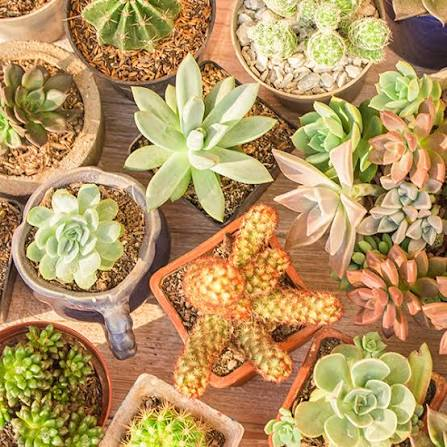

Plantas nativas
Descubra espécies brasileiras, suas características e sua importância para o meio ambiente.
Ver catálogo →TECNOLOGIAS DO BEM VIVER
Conheça a riqueza das plantas nativas, os saberes tradicionais e as práticas que ajudam a preservar a natureza e valorizar a biodiversidade brasileira.

Natureza, conhecimento e tradição.
NOSSA PROPOSTA
O Semeia+ é um projeto voltado à valorização das plantas nativas, dos conhecimentos ancestrais e dos territórios onde esses saberes são construídos e compartilhados.
Descubra espécies brasileiras, suas características e sua importância para o meio ambiente.
Ver catálogo →Conheça a importância dos conhecimentos tradicionais relacionados às plantas e à natureza.
Conhecer saberes →Explore a relação entre as comunidades, a biodiversidade e os territórios brasileiros.
Explorar territórios →PRESERVAR É UM COMPROMISSO